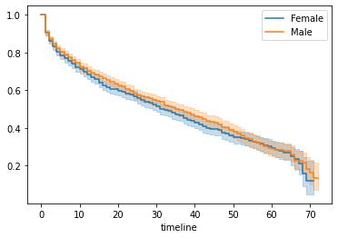
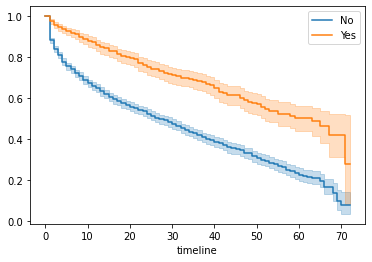
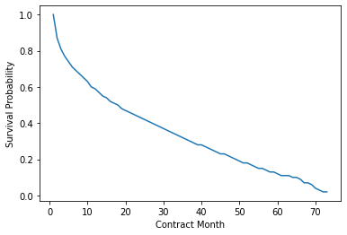

本步骤的目标是将外部电信客户数据集导入分析环境，并进行初步清洗，为后续建模提供结构规范、字段明确、无缺失值的数据源。
tenure（服务时间）与 churnString（是否流失）两个关键字段。totalCharges 缺失记录；churnString 字段转为数值型 churn 字段（1 表示已流失，0 表示未流失）；churnString 字段；silver_monthly_customers，作为后续分析基础。通过 Kaplan-Meier 方法构建客户生存曲线，观察总体及分组客户的留存概率随时间的变化趋势，并用 Log-Rank 检验判断分组之间差异的统计显著性。
Kaplan-Meier 生存函数的估计值定义为：
其中：
“协变量层级的 Kaplan-Meier 曲线”指的是分组后的生存曲线，例如按性别、付款方式、是否使用 Online Security 这种特征划分。
当肉眼看到曲线差不多时，还要通过统计检验来确认 → 就用 log-rank test（对数秩检验）。

| test_statistic | p | -log2(p) | ||
|---|---|---|---|---|
| Female | Male | 1.61011 | 0.204476 | 2.289995 |
p 值 > 0.05 → 没有统计显著性差异；
结论：性别不是客户流失的重要影响因素；

| test_statistic | p | -log2(p) | ||
|---|---|---|---|---|
| No | Yes | 75.800079 | 3.138886e-18 | 58.144453 |
onlineSecurity 很可能是显著的影响因素。
除了 phoneService 和 gender，其余协变量在 Log-rank 检验中均表现出显著的生存曲线差异（p < 0.05） ，即它们对客户流失具有统计意义上的影响。
| 协变量（变量名） | 含义简述 | 显著性 |
|---|---|---|
| gender | 性别 | ❌ 否 |
| phoneService | 是否有电话服务 | ❌ 否 |
| internetService | 上网服务类型（DSL/Fiber等） | ✔️ 是 |
| paymentMethod | 付款方式 | ✔️ 是 |
| techSupport | 是否启用技术支持 | ✔️ 是 |
| onlineSecurity | 是否启用在线安全服务 | ✔️ 是 |
| onlineBackup | 是否启用在线备份 | ✔️ 是 |
| deviceProtection | 是否启用设备保护 | ✔️ 是 |
| partner | 是否有配偶 | ✔️ 是 |
| dependents | 是否有家属 | ✔️ 是 |
| seniorCitizen | 是否为老年人 | ✔️ 是 |
| paperlessBilling | 是否使用电子账单 | ✔️ 是 |
| multipleLines | 是否开通多线路 | ✔️ 是 |
| streamingTV | 是否使用 TV 串流服务 | ✔️ 是 |
| streamingMovies | 是否看电影串流服务 | ✔️ 是 |
pd.DataFrame(sp_internet_dsl.survival_function_at_times(range(0,10)))
输出如下：
| 时间（月） | 生存概率（DSL） |
|---|---|
| 0 | 1.000000 |
| 1 | 0.902698 |
| 2 | 0.864380 |
| 3 | 0.834702 |
| 4 | 0.810522 |
| 5 | 0.794352 |
| 6 | 0.783900 |
| 7 | 0.776362 |
| 8 | 0.768486 |
| 9 | 0.750833 |
生存函数表示：在第 t 月仍“存活”（即未流失）的客户比例；
利用 Cox 模型识别影响客户流失风险的重要因素，量化其对风险的影响方向和强度，建立对客户流失风险进行定量评估的基础模型。
| 项 | 含义 |
|---|---|
| 某人在 t 时间点的风险率 | |
| 基准风险（baseline hazard）——当所有变量为 baseline 值时的风险 | |
| 第 i 个变量对应的系数（由模型训练得到） | |
| 第 i 个变量的数值（是否是 baseline） |
这代表模型在计算其他组的风险时，都是以这些值为参考组（HR = 1.0）进行比较的。
Cox 比例风险模型的核心假设是：协变量对风险的影响在时间上保持恒定，即“比例风险假设”。这意味着不同组之间的风险比（Hazard Ratio）不会随着时间推移而改变，而是维持一个固定倍数。风险函数可分解为：一个随时间变化的基准风险（baseline hazard） × 一个随协变量变化、但与时间无关的部分风险（partial hazard）。
tenure（服务时间）作为生存时间变量，churn（流失标记）作为事件变量。contract, paymentMethod, internetService, paperlessBilling 等）；拟合 Cox 比例风险模型：
CoxPHFitter 进行模型拟合；coef（回归系数）、exp(coef)（风险比）及 P 值。使用 Cox 比例风险模型对客户流失进行了建模，所有变量的 p 值均小于 0.005，具备统计显著性。系数估计的置信区间未跨越 1，说明模型稳定性良好。以 internetService_DSL 为例，风险比为 0.80，表明使用 DSL 的客户流失风险较基准组低 20%。模型评估指标如 C-index 和对数似然比也支持模型拟合效果良好。
模型诊断：检验比例风险假设成立性、模型拟合优度以及变量显著性。
在使用 cph.check_assumptions() 对 Cox 模型进行比例风险假设检验后发现，dependents_Yes 满足假设，而 internetService_DSL、onlineBackup_Yes 和 techSupport_Yes 的 p 值均小于 0.005，显著违反比例风险假设。Lifelines 建议对这些变量使用 strata 参数进行分层建模，以消除变量对风险比随时间变化的影响，增强模型的稳健性。
特征选择：包括合同类型、支付方式、互联网服务、电子账单等。
使用 Schoenfeld 残差图对 Cox 模型中变量的比例风险假设进行了可视化验证。结果显示：internetService_DSL, onlineBackup_Yes, 和 techSupport_Yes 这三个变量在残差图中呈现明显随时间变化的趋势，违反比例风险假设。而 dependents_Yes 线条较为平稳，符合假设。为此，建议在重新拟合 Cox 模型时将上述三个变量加入 strata 参数进行分层建模，以增强模型稳健性并控制风险比随时间变化带来的偏差。
通过 log-log 转换后的 Kaplan-Meier 生存曲线进一步验证比例风险假设。分析发现，除了 internetService 变量外，其余变量的 log-log 曲线大多呈平行趋势，表明它们较好地符合假设。而 internetService 在 log(time) < 1 或 > 3 的区间内存在明显的曲线偏离，再次证实了其不满足比例风险假设，应在建模中使用 strata 处理。
AFT 模型的基本思想是：不同组别的生存函数之间存在一个时间加速因子（Acceleration Factor, λ）****，而不是像 Cox 模型那样假设风险比恒定。
数据准备：使用 silver_monthly_customers 数据表，选取 tenure 作为留存时间变量，churn 作为事件变量；
变量编码：对 contract, internetService, paperlessBilling 等分类变量进行 One-Hot 编码处理；
模型拟合：使用 Lifelines 库中的 AFTFitter 进行加速失效时间模型训练，选用 log-normal 分布假设；
模型采用对数时间下的生存函数建模结构，在对数转换回实际时间后，得出中位生存时间为 135.51
结果输出：提取模型中每个变量的系数、P 值及其方向，用于解释变量对生存时间的加速或延缓作用。
本次 Log-Logistic AFT 模型结果表明，所有变量均具有统计显著性，且对客户流失时间有显著的延缓作用。其中，onlineSecurity_Yes（加速因子约 10.7）、partner_Yes（2.09）和 onlineBackup_Yes（2.25）是影响最大的因素，显著延长了客户的在网时间。模型的 Concordance 指数为 0.73，优于 Cox 模型的 0.64，说明其在预测客户生命周期方面具有更高的判别能力，是在违反比例风险假设情况下的有效替代模型。
模型结果检验：在对 Log-Logistic AFT 模型进行假设检验时，通过 log-log 生存曲线图观察发现，大多数变量的曲线在图中较为平行，整体呈线性趋势，说明该模型在大体上满足 比例优势假设（Proportional Odds Assumption），且 Log-Logistic 分布作为指定分布是合理的选择。虽然部分变量在某些时间段存在轻微偏离，但整体线性关系良好，支持我们继续采用 AFT 模型进行解释与预测。
使用 Cox 比例风险模型（Cox Proportional Hazards Model）对 IBM Telco 客户流失数据进行建模，进一步估算客户生命周期价值（Customer Lifetime Value）。
1. 编码与数据准备（Data Preparation）
使用 pd.get_dummies() 对分类变量进行 One-Hot 编码；
明确指定模型需要使用的变量，如 tenure, churn, internetService_DSL, onlineBackup_Yes 等；
构建 survival_pd 数据集，用于后续生存分析建模。
2. 拟合 Cox 比例风险模型（Fit Cox Proportional Hazards Model）
使用 lifelines.CoxPHFitter() 进行建模；
指定 tenure 为时间变量，churn 为事件变量；
模型成功拟合后，可用于预测客户留存概率。
3. 创建交互组件（Widgets for Dashboard）
4. 构建仪表盘表格（Create Table for Dashboard）
核心是 get_payback_df() 函数，输出用户每月的财务价值评估；
包含以下重要财务列：
5. 可视化结果NPV和生存概率曲线
